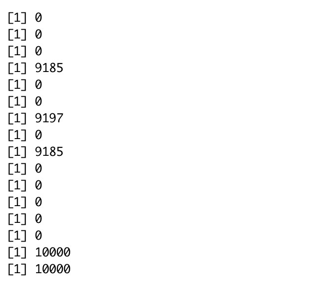
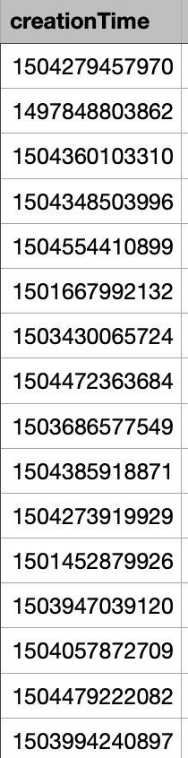
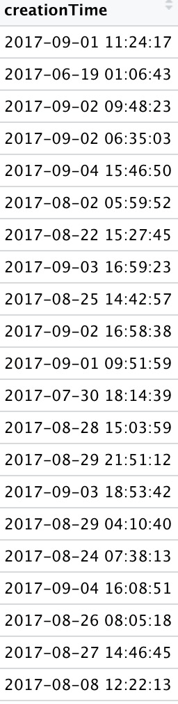
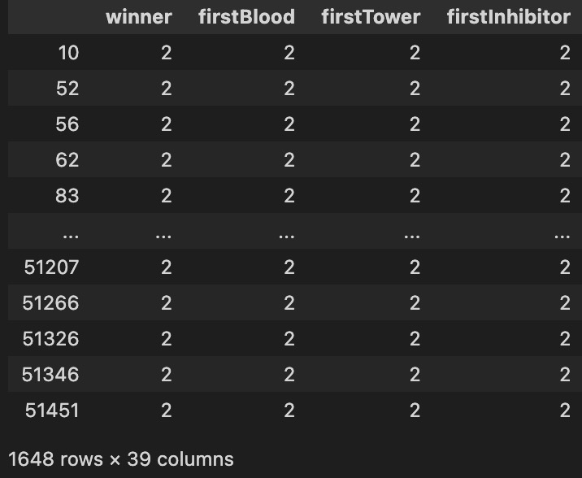

Here is the raw data of 10000 tweets from Twitter API. The code is also attched here. To get started, I need to figure out whether or not each column has any NAN values; as a result, I utilize the formula sum(is.na(df$column)). The following is the formula that may be used by this function to compute the total number of columns that contain values that do not exist:
When it is complete, I will be able to determine which columns do not contain any values. In addition, I take a look at these columns to see whether or not incorporating them into my research would be beneficial. If I conclude that they do not contribute anything useful, I will get rid of them by using the function subset(df, select = -c()). In contrast to this, I will eliminate the rows that have missing values, which are denoted by NA in the row header. At long last, I provide the data after my cleaning.
Here is another raw data about the players' match record example. To get things started, I use the spec() method to either run the spec.pgram function or the spec.ar function that is part of the stats package. Both of these functions can be found in the stats package. After that, I use the function sum(is.na(df$column)) to show the total number of missing values for each column. This comes after I have already done the previous step. Even though it ought to go without saying that this raw data does not include any missing values, I have observed that the values in the creationTime column are of the numeric type.
Despite the fact that the hours, minutes, and seconds are correct, I have been working on trying to convert the epoch time of the date that was produced into the standard time format (YY/MM/DD) in order to find a solution to this problem. It looks like this: (the cleaned data)
Much of the data is in the table but needs preprocessing. Since the data was acquired straight from Riot Games' API, no imputation is necessary. Not all info is helpful. Many rows reflect unfinished games. Incomplete games will be considered noise that has to be removed, and games that aren't played properly won't help define a typical game. These games may be imperfect for many reasons, but they are not helpful for categorizing results. Unneeded data columns may be removed instantly. GameID is a useless column in this analysis since the report is searching for broad patterns, not particular games and results. Creation time is the game's creation time in epoch format, which may be converted. Game length is translated into minutes for further analysis. All 15-minute games have been eliminated. Some of the quickest professional games have lasted barely 18 minutes. Games that last fewer than 18 minutes were either surrendered or terminated by players disconnecting. Regardless of the cause, these matches will not be analyzed in this report. Games without demolished towers are ineligible for victory. Games where no towerr has been demolished may also be eliminated since they are incomplete. Because these games lasted at least 18 minutes, it's probable the other team surrendered, therefore they're included. These procedures reduce data noise. Any'sum' columns contain player preferences. This data represents player preference, and although it was looked at during data exploration, it's not in the report. Both 'champid' and 'banid' are interesting. Each column indicates the champion's id, which must be read from a table to acquire the champion's name. This piece helps balance topics but frequently raises more questions than it answers. The championid dataset is main. Riot Games offers data access within request restrictions. The championid dataset is modest and largely a lookup table, but the information is accurate since it came from the Riot API.
I choose Python because it is a great language for extracting data from text; thus, I use it to gather tweets, and once I've cleaned the data, I use it to categorize the tweets that I've collected. This is accomplished via the use of the Twitter API. This is the raw data for 10000 tweets about my query: League of Legends with the keywords: 'Riot','LOL','S12','World Championship','team','prediction win','win rate', 'KDA','gold','rank','player'. To get all information of my topic, I clean this raw data to form a new dataframe without any NA missing values. I clean up this raw data to construct a fresh dataframe without any NA missing values so that I can receive all of the information pertaining to my issue. It comprises four columns that contain the information about the 10,000 tweets, including the authors' ids, the posting time, the language, and the information about the tweets themselves. We are able to assess the popularity of the game in a range of regions according to the number of languages by making some preliminary judgments based on the findings of the 10,000 tweets. This will be introduced in detail on next exploring data tab. Finally, here is the code link.
Here is another raw data of the players' information mentioned above. And the cleaned data is here. In the cleaned data, I try to calculate the total kills of team 1 and team 2. And then I form a lot of dataframe of computing the winner related with some elements: first inhibitor, first tower, first dragon, first baron, first blood, and first riftHerald. That shows they are all have a big effect and positive corrolations to determine the winner. Finally, this dataframe is cleaned to determine the likelihood of total when all the aforementioned restrictions are met.
